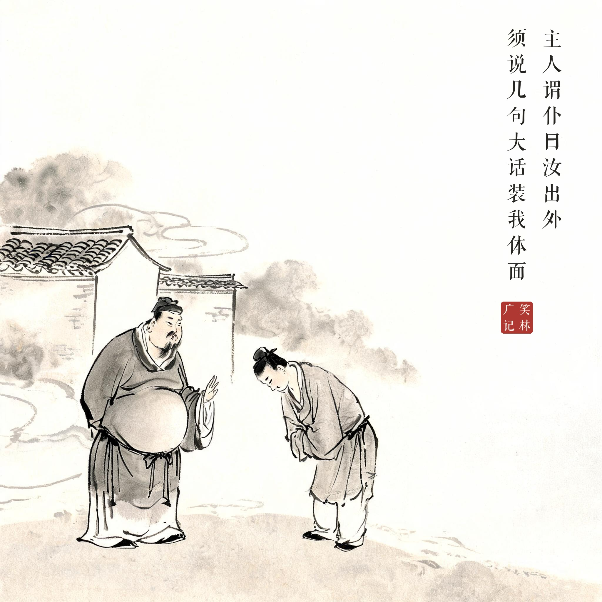
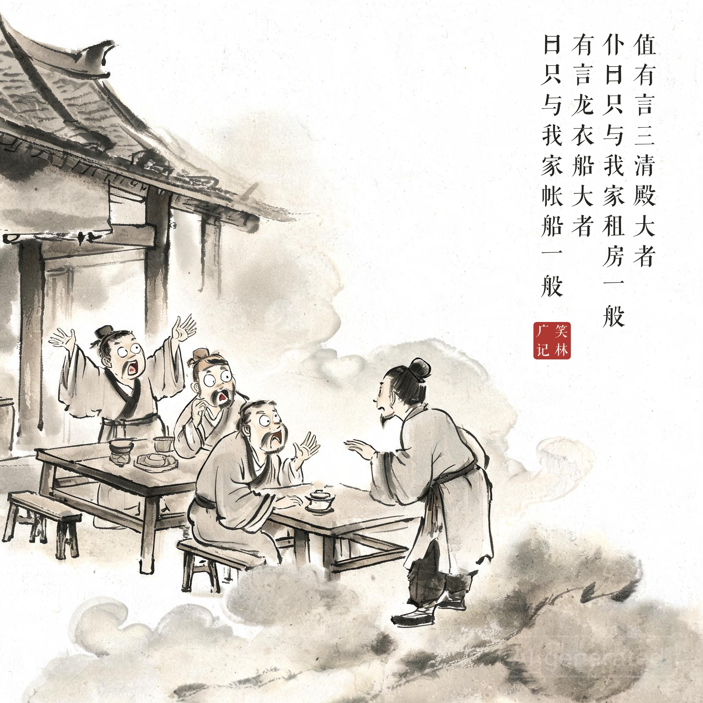
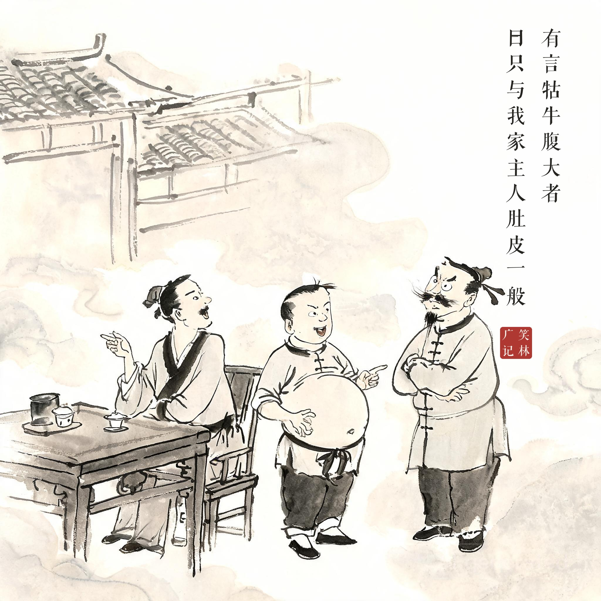

《笑林广记 · 谬误部》（[清]游戏主人纂集）
主人谓仆曰："汝出外，须说几句大话，装我体面。"仆领之。值有言"三清殿大"者，仆曰："只与我家租房一般。"有言"龙衣船大"者，曰："只与我家帐船一般。"有言"牯牛腹大"者，曰："只与我家主人肚皮一般。"
主人对仆人说："你出门在外，得说几句大话，给我撑场面。"仆人领命。有人夸"三清殿真大"，仆人说："不过跟我家租房一样。"有人夸"龙衣船真大"，仆人说："跟我家帐船一样。"有人夸"牯牛肚子真大"，仆人说："跟我家主人的肚皮一样。"
撑面子的活儿最考验分寸感——仆人前两句都把主人撑起来了，第三句也把主人"比"了进去。实话不能全说。